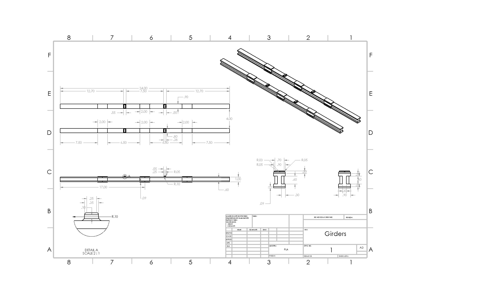
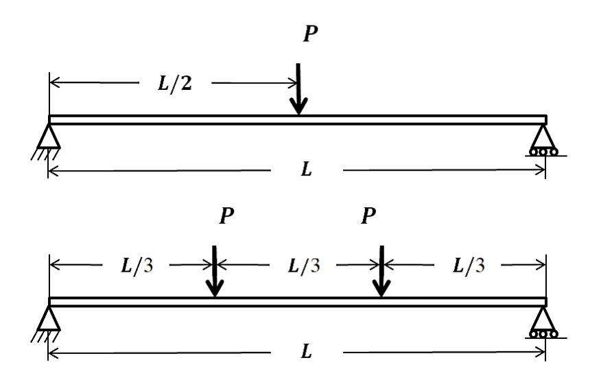
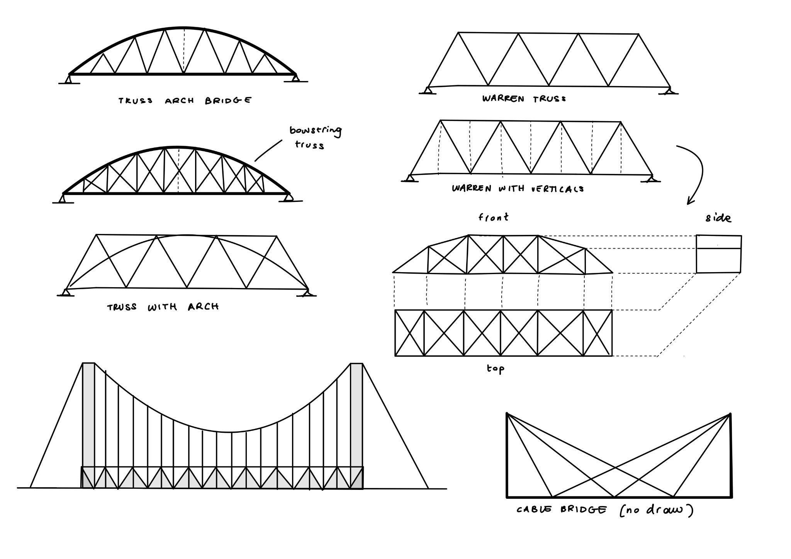
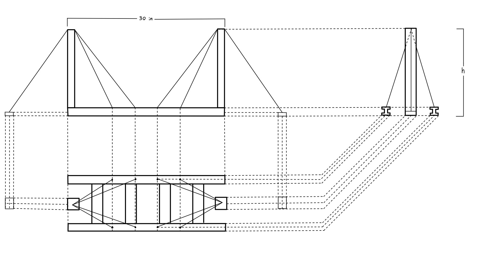
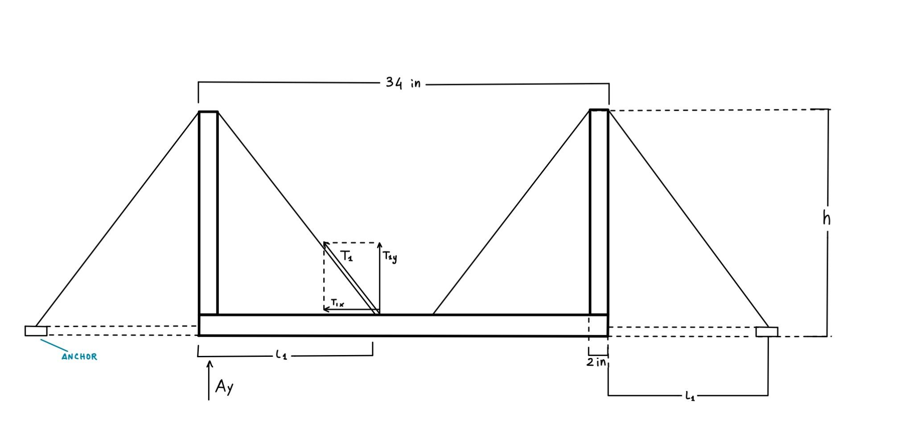
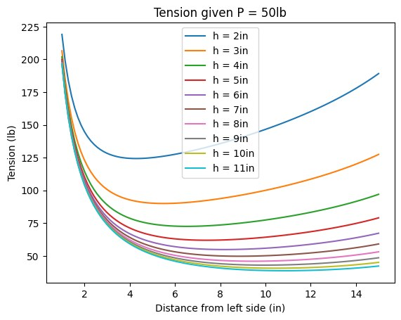
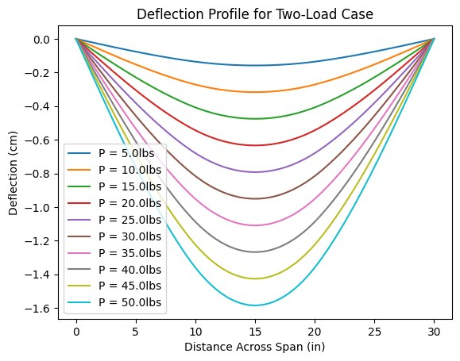
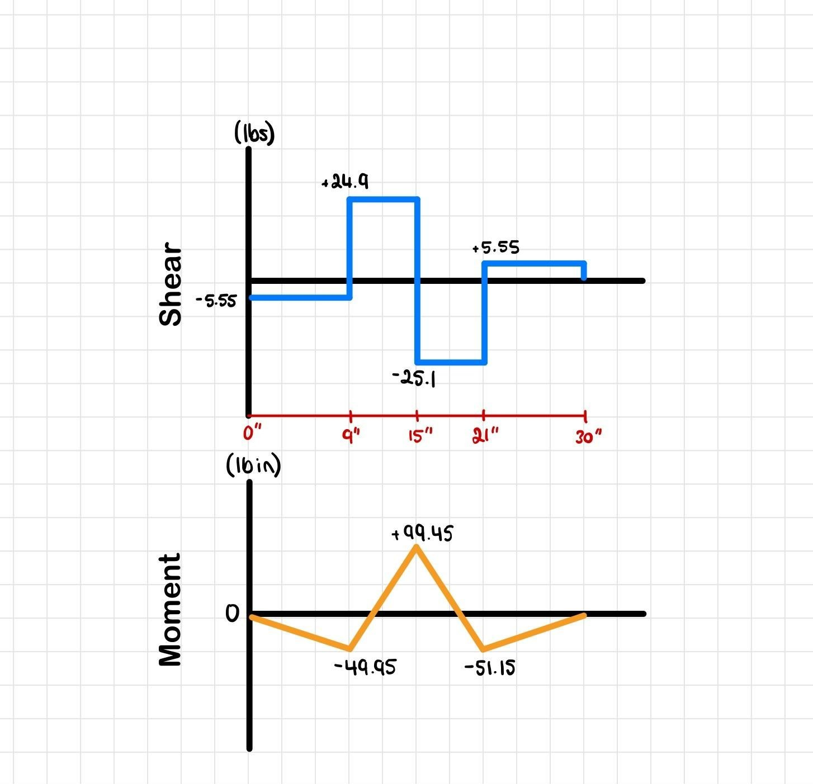

{kind=link}


Static Structure Design
A 30 in, fully 3D-printed PLA bridge with a cable-stayed deck, designed to carry 50 lb at midspan within a 2 cm deflection limit - optimized with a custom Python model before a single part was printed.
Structural Analysis
SolidWorks
Python
3D Printing (PLA)
Status: Completed · Winter 2024 (CIV_ENG 216)
Overview
For CIV ENG 216's design-build-test project, our team of three had to design, build, and test the lightest, most cost-effective bridge that could still satisfy a tight set of specs: a 30 in span, at least 4 in wide, built from only two girders no deeper than 1 in, with no piers, no deck, and columns only at the supports. The bridge had to survive two separate load cases - a single 50 lb point load at midspan, and two 30 lb loads placed L/3 in from each support - while keeping deflection under 2 cm the whole way through incremental 5 lb loading steps. Every part had to be 3D-printed PLA plus fishing-wire cable, and the whole build had to come in under a $300,000 project-cost budget (with a 25% penalty on anything over).

Load Case 1: 50 lb at midspan. Load Case 2: two 30 lb loads at L/3 from each support.
Challenge
The "no deck" rule was the crux of the problem: without a deck to distribute load, the two girders and whatever support structure we designed had to do all the work of staying under 2 cm of deflection, for two different loading patterns, using a material we didn't fully trust yet. In the weeks before the final build, we ran compressive, tensile, and flexural tests on PLA coupons printed at different infills and print orientations, since PLA's strength and stiffness change noticeably depending on how it's printed relative to the load. Those results - not textbook values - had to drive every dimension we chose, which meant the design couldn't be finalized until the material was actually characterized.

Early brainstorming: several truss-arch and Warren-truss variants were sketched before settling on a cable-supported deck.
Approach
We landed on a cable-stayed design: two printed columns, four girders forming the deck, and 8 cables (4 per side) running diagonally from the column tops down to points along the girders, putting the deck in a suspension-like system that counteracts the vertical load during testing. Printed anchors at the base resist the horizontal component of cable tension so the columns don't get pulled inward.

Concept: two columns, 8 diagonal cables, and printed anchors resisting horizontal cable tension.
Column height and cable insertion point turned out to be the two parameters that mattered most, so we wrote a Python model combining beam-deflection and cable-tension equations to sweep across both and find the combination that minimized the cable tension needed to hold 50 lb - which also kept material cost down, since cable was priced per centimeter.

Free body diagram used to derive the tension and reaction equations solved in the optimization script.

Required cable tension across column heights - the basis for choosing an 8 in column height and a 9 in cable insertion point.

Modeled deflection across the span at 5 lb increments up to 50 lb, confirming the design would stay under the 2 cm limit.
Result
With the optimized geometry set, we ran the final hand calculations against the PLA properties from our own lab testing, and every failure mode came back with a wide margin. Column buckling: a critical load of 977.6 lb against an actual load of about 61 lb - over 10x margin. Compressive stress in the columns: 76 PSI against a 6,760 PSI yield strength. Girder tensile stress from cable tension: 86 PSI against a 2,411 PSI yield. Bending stress: up to 535 PSI against a bending strength of roughly 5,922 PSI. On the cost side, the finished bill of materials - girders, columns, anchors, cable, and all joints - came in at $299,676, just under the $300,000 cap.

Shear and moment diagrams for the girder, used to size it against bending and shear stress.
Video Demo
Video of Bridge Test
{kind=link}
{kind=link}
{kind=link}
{kind=link}